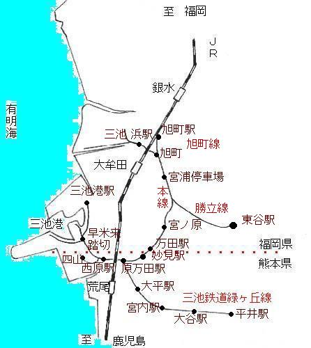

|
三池専用鉄道は、明治23年頃、七浦坑と横須賀間に石炭を運ぶ蒸気機関車を走らせるところ
から始まった。明治31年、万田坑操業開始と共に同鉄道も三池港まで範囲が伸び、昭和39年8月からは地方鉄道化により、
「三池鉄道」として緑ケ丘社宅から原万田社宅を分岐に万田社宅方面及び四山、三池港方面へ輸送体制を充実、一般にも
有料で利用され地方鉄道としての役割を担ってきた。しかし間もなくして、石炭産業の衰退と共に利用客も減り、昭和48年
三池鉄道は営業を止め元の炭鉱専用鉄道に戻った。そして、平成9年3月の三池炭鉱閉山により、その役割を終えた。 もっとも当時の全国時刻表をみても「三井三池鉄道」の記載はなく、知られざる鉄道でもあった。
 |